以 2019 年台风利奇马（Lekima, 1909）为校准案例，遵循国际再保险行业标准的 CAT 模型四模块框架（Hazard → Exposure → Vulnerability → Financial）， 从台风风场物理建模一路走到 EP 曲线、监管资本、超赔再保分层与 CAT bond 定价的 端到端、可复现量化平台。
以下数字全部来自固定随机种子（20190810）的一次完整运行，结果可复现。金额单位为人民币亿元。
这是国际再保险行业通用的 CAT 模型标准流水线。每个模块的输出即下一模块的输入，形成从气象物理量到资本决策数字的完整传导链。
每层左侧色条对应模块编号；蓝色箭头标注模块间传递的数据对象。
visualization.py 横切四个模块，统一产出 11 张 300 dpi 英文图表；
main.py 负责流程编排与全局一致性审查。
所有公式均取自公开文献的标准形式；参数取值见 config.py，随机种子固定以保证复现性。
以中心气压差 Δp 为驱动量，通过解析风廓线还原台风每一时刻的二维风场，再叠加移动非对称与登陆衰减修正，最终对 14 个暴露点取逐点最大阵风风速。
Vmax = 3.4 · Δp0.644
B = ρ · e · Vg2 / Δp (ρ = 1.15 kg/m³, e = 2.718, Vg ≈ Vmax)
Vg(r) = √( B/ρ · Δp · (Rmw/r)B · exp(−(Rmw/r)B) + (r·f/2)2 ) − r·f/2
Rmw = 46.4 · exp(−0.0155 · Vmax + 0.0169 · |φ|) [km]
Vmax(t) = V0 · exp(−αdec · (t − tlandfall)) αdec ≈ 0.095 / hr
α · Vmove（前向切变），α ≈ 0.4。× 0.85，地表风 → 阵风 × 1.30。20190810。对应图表：fig01 路径图 · fig02 风廓线 · fig03 风场热图 · fig11 事件集诊断
暴露口径为「区域风灾可暴露资本存量」，由地市 GDP 经资本产出比放大、再按可受风灾影响的资本占比折减得到；保险口径再乘以保险渗透率。
exposed_value = GDP × capital_output_ratio (3.2) × wind_exposed_fraction (0.45)
insured_value = exposed_value × insurance_penetration
对应图表：fig05 分城市损失校验
把风速映射为损失率，是整个链路中不确定性最大、也最需要校准的一环。本模块采用两族标准损伤函数加权合成，再叠加次生内涝与灾后需求激增两个放大因子。
f(v) = (v / vhalf)3 / ( 1 + (v / vhalf)3 )
f(v) = Φ( ln(v / vhalf) / β )
fcomp(v) = Σi wi · fi(v)
1 + g(distance) · (Vmax / Vref) · province_susceptibility
scipy.optimize.brentq 反演 v_half（≈ 176 m/s），使利奇马经济建模损失精确等于实际的 537.2 亿元。
对应图表：fig04 脆弱性曲线族 · fig05 分城市校验
把 10,000 场事件损失转成年损失表（YLT），进而生成整套可直接用于资本与定价决策的指标。这是从「风险量化」跨到「风险定价」的关键一步。
AAL = Σ lossi · Pi | OEP：单事件最大损失超越概率 | AEP：年聚合损失超越概率
TVaRp = E[ L | L ≥ VaRp ] Capital = VaR99.5% − AAL
P = ( E[R] + k · σR ) · ( 1 + e ) ROL = Premium / Limit
Spread = EL + γ · PFLα · CELβ
EL 期望损失 · PFL 本金损失概率 · CEL 条件期望损失
F*(x) = Φ( Φ−1(F(x)) − λ )，再对畸变分布取期望
HE = 1 − Var( L − q · P ) / Var( L )
对应图表：fig06 EP 曲线 · fig07 再保分层 · fig08 CAT bond 定价 · fig09 基差风险 · fig10 有效前沿
全部图表由 visualization.py 一次生成，300 dpi、英文标签（便于投稿与英文简历场景）。点击任意图片可放大查看细节。
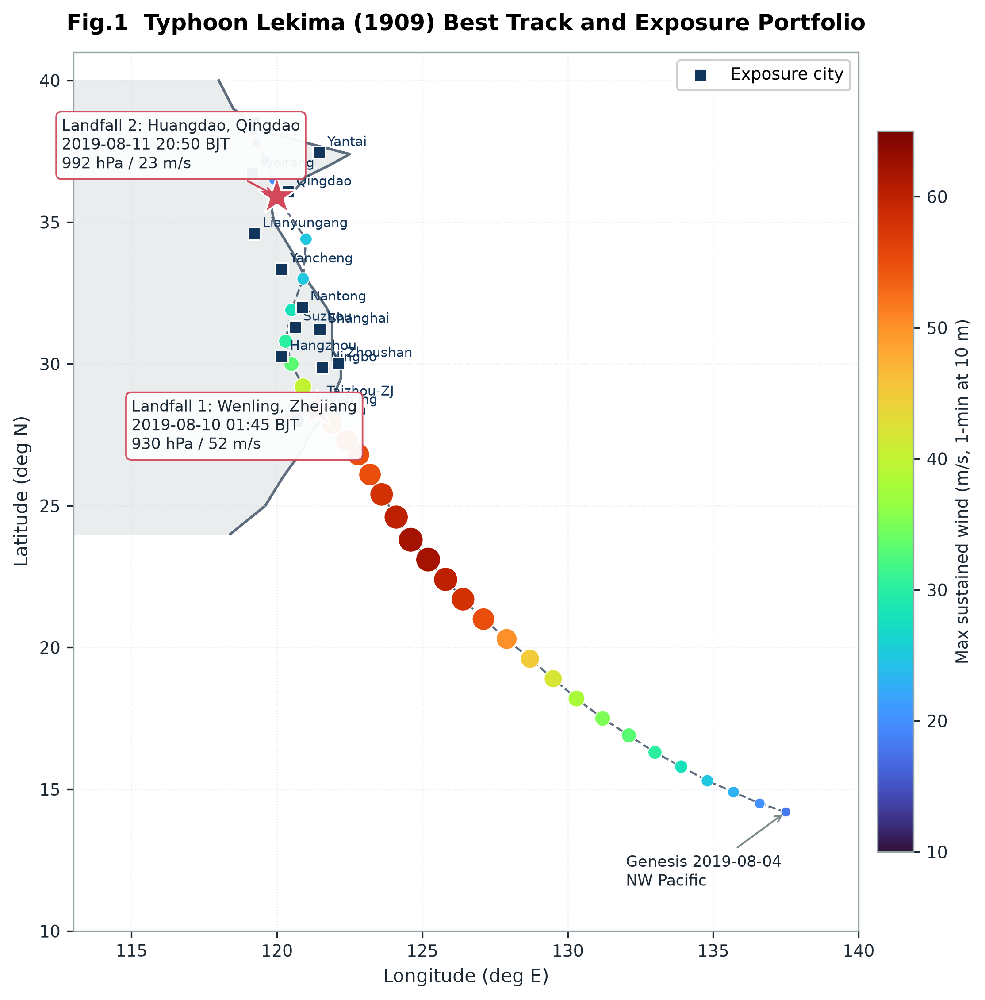
2019 年台风利奇马 37 个路径点的经纬度轨迹，叠加中心气压 / 最大风速的沿程变化，并标出 8 月 10 日在浙江温岭的登陆位置与 14 个暴露地市点位。
怎么读：关注登陆点前后强度骤降段——这正是 Kaplan–DeMaria 指数衰减在起作用；路径右侧城市因移动非对称修正会承受更高风速。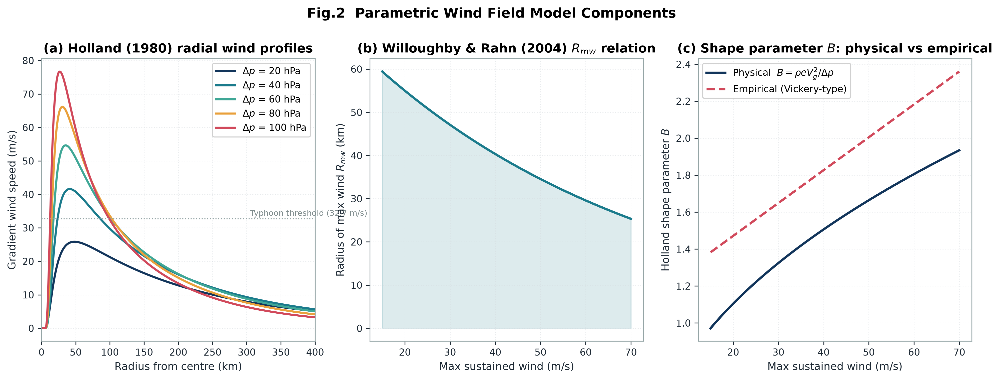
不同中心气压差 Δp 与不同 B 参数下的梯度风径向分布：横轴为距台风中心距离 r，纵轴为风速；峰值位置即最大风速半径 Rmw。
怎么读：B 越大廓线越「尖」——峰值更高、衰减更快，意味着破坏集中在眼墙附近；B 越小风场越「胖」，中等风速影响范围更广，对区域总损失反而可能更不利。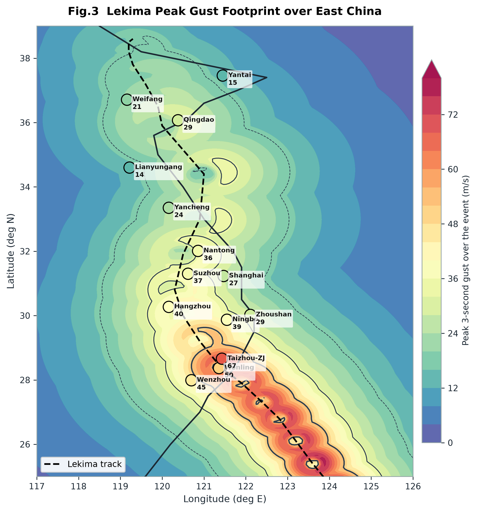
利奇马登陆瞬间的地表 / 阵风风速空间分布热图，叠加台风中心、路径与暴露城市点位。
怎么读：注意热图相对路径的左右不对称——右半圆（相对移动方向）风速明显更高，这是叠加了 α·Vmove 前向切变的结果，也解释了为何路径右侧城市损失更重。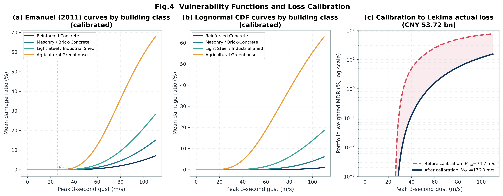
Emanuel 2011 三次方曲线与对数正态曲线在不同 vhalf / β 下的形态，以及按建筑类型权重合成的复合曲线 fcomp(v)。
怎么读：横轴风速、纵轴损失率（0–1）。vhalf 是曲线到达 50% 损失率的风速，控制整体「敏感度」；β 控制过渡陡峭程度。温室大棚等轻质结构曲线最靠左（低风速即受损）。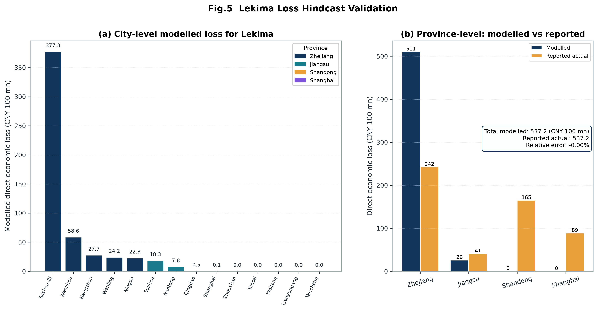
14 个地市的建模损失分解与总量校验：经 brentq 反演 vhalf 后，建模总损失 537.2 亿元与实际报告值 537.2 亿元吻合（相对误差 ≈ 0）。
怎么读：总量吻合是校准的直接结果（目标函数即如此设定），真正的看点是空间分布——损失是否集中在温岭/台州/宁波等实际重灾区，这才检验了模块 A→C 链路的合理性。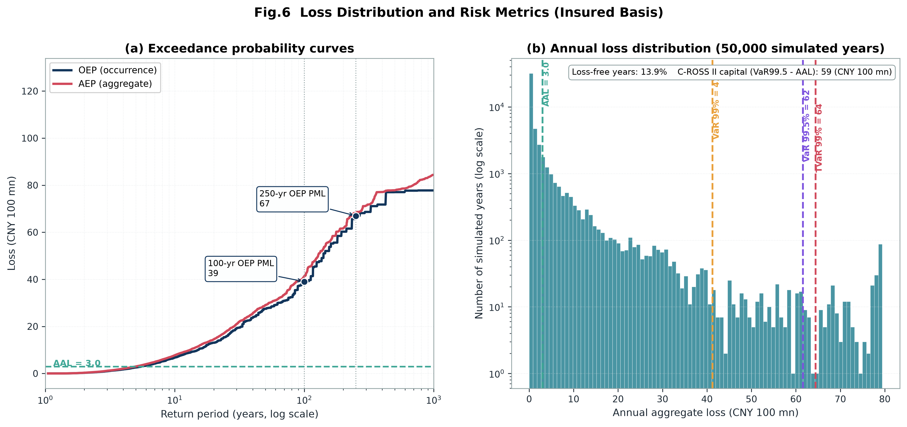
基于 10,000 场事件生成的年损失表所得的 OEP（单事件最大损失）与 AEP（年聚合损失）曲线，标注 100 年 / 250 年一遇 PML。
怎么读：横轴常为重现期（对数刻度），纵轴为损失。100 年 OEP PML = 2,710.6 亿元，250 年 = 4,808.6 亿元；PML100/AAL = 12.35x 落在行业经验带 5–20x 内。AEP 始终位于 OEP 之上，差值即「一年多次事件」的聚合效应。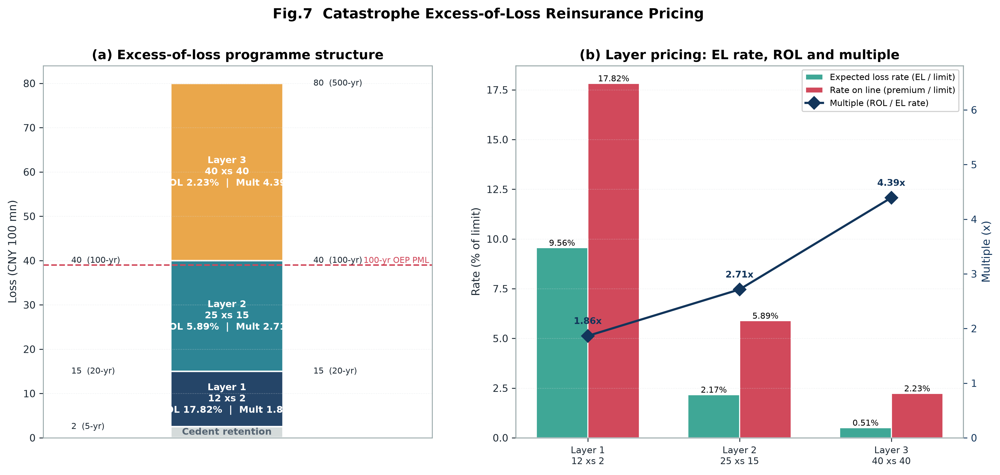
三层超赔（Excess of Loss）结构的起赔点 / 限额、期望损失、纯保费与 Rate on Line，采用标准差保费原理 P = (E[R] + k·σR)(1+e) 定价。
怎么读：关注 multiple = Premium / Expected Loss 沿层位递增：1.86x → 2.71x → 4.39x。越高层越罕见、风险负载越高——这就是「远端层贵得离谱」的定量表达。三层综合 ROL 为 5.93%。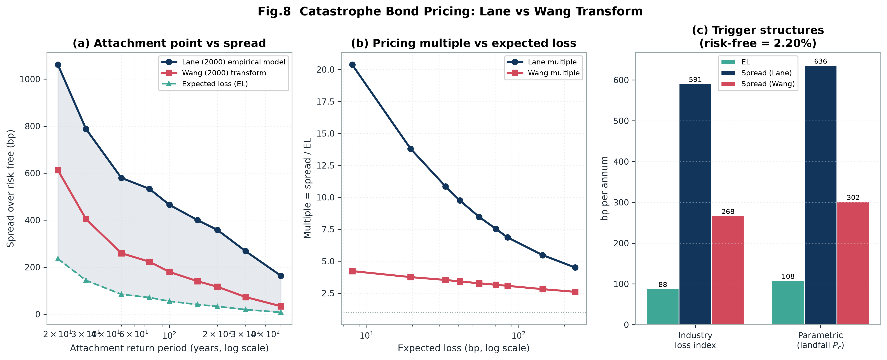
Lane (2000) 多因子模型与 Wang (2000) 畸变算子两条定价路径的 spread 对比，以及对 EL / PFL / CEL / 畸变参数 λ 的敏感性。
怎么读：Lane spread 591 bp vs Wang spread 268 bp，同一份风险给出 2 倍以上差异。Lane 是市场经验拟合（含实际投资者要求的高额风险溢价），Wang 是理论一致的畸变定价（风险负载更平滑）。票息 coupon = 8.11%。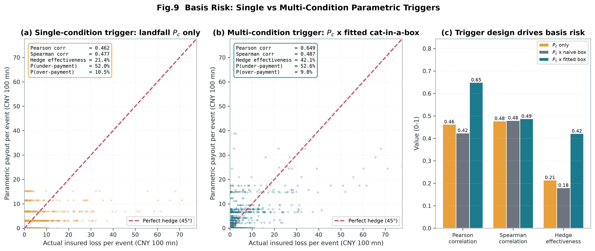
实际损失 L 与参数触发赔付 P 的散点/相关性分析，对比 naive cat-in-a-box 与经验拟合 fitted-box 两种箱体设计的对冲效率 HE。
怎么读：散点越贴近对角线，基差风险越小。fitted-box 把 Pearson 相关系数从 0.42 提升到 0.649、HE 从 18% 提升到 42.1%——直观展示「触发结构设计」本身就能创造巨大价值，而非只能被动接受基差风险。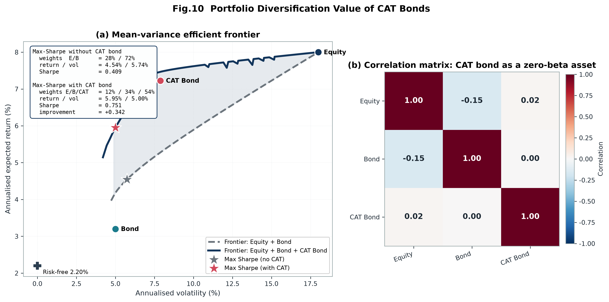
网格法生成的均值—方差有效前沿，对比「传统资产组合」与「传统资产 + CAT bond」两条前沿，并标出最大夏普组合。
怎么读：加入 CAT bond 后前沿整体向左上方外推，夏普比率改善 +0.342。原因在于巨灾风险与金融市场基本零相关（zero-beta）——它的分散化价值不来自高收益，而来自低相关性。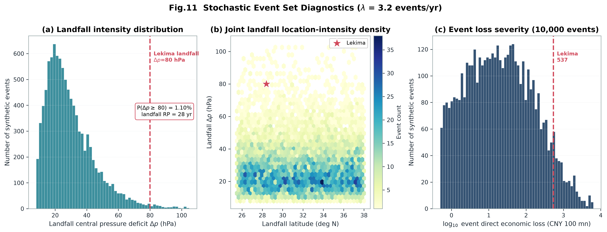
随机事件集的边缘分布检查：中心气压差 Δp 的截断对数正态抽样、登陆纬度分布、移动方向与移速经验分布、年发生次数的泊松拟合（λ = 3.2），以及事件损失的重尾形态。
怎么读：这是模型的「体检报告」——若抽样分布偏离设定的先验，后续所有 EP 曲线与定价结论都不可信。重点看 Δp 是否落在 [8, 105] hPa 截断区间内、年频率直方图是否贴合泊松概率质量函数。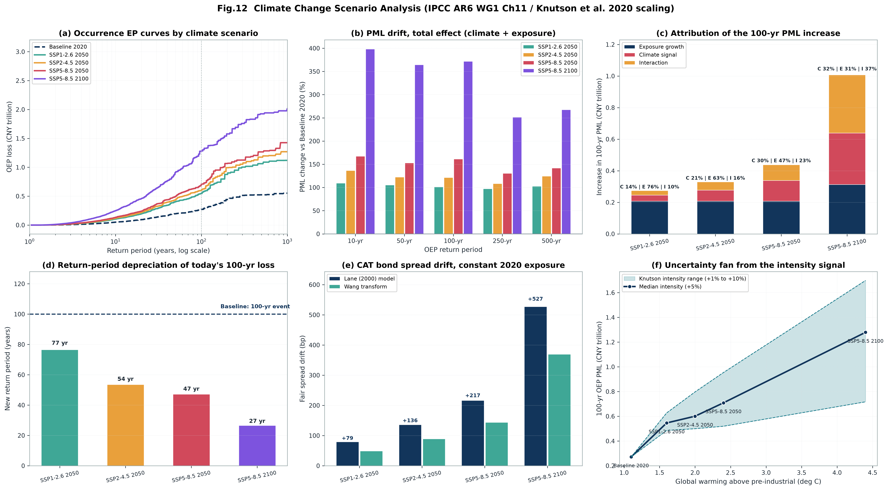
基于 IPCC AR6 WG1 Ch11 与 Knutson et al. (2020) 的 5 个 SSP 情景：EP 曲线族、PML 漂移、归因分解、百年一遇重现期贬值、CAT bond 利差漂移与强度信号不确定性带。
怎么读：到 2050 年，SSP5-8.5 路径下「今天 100 年一遇的经济损失」在恒定暴露口径下约变成 47 年一遇；归因上暴露增长仍是主因（约 47%），气候信号约占 30%，二者交互不可忽略（约 23%）。模块 climate.py 在既有四模块之上叠加气候情景引擎，用共同随机数扰动保持事件几何不变、仅变换强度维度，使情景对比更干净。
| 情景 | 年份 | 升温 °C | Δp 中位数 | Δp σ | λ 频率 | 降水 β |
|---|---|---|---|---|---|---|
| Baseline 2020 | 2020 | 1.1 | ×1.00 | ×1.00 | ×1.00 | ×1.00 |
| SSP1-2.6 2050 | 2050 | 1.6 | ×1.04 | ×1.02 | ×0.96 | ×1.05 |
| SSP2-4.5 2050 | 2050 | 2.0 | ×1.07 | ×1.04 | ×0.94 | ×1.09 |
| SSP5-8.5 2050 | 2050 | 2.4 | ×1.10 | ×1.06 | ×0.92 | ×1.13 |
| SSP5-8.5 2100 | 2100 | 4.4 | ×1.22 | ×1.12 | ×0.86 | ×1.28 |
再保险与 CAT bond 的利差漂移不宜混入暴露增长——因为合约期限（1~3 年）远短于暴露增长周期，续转时会通过重新定价自动吸收。真正需要"今天定价进去"的是气候信号。
下表为一次完整运行（种子 20190810）的核心输出。金额单位人民币亿元。
| 指标 Metric | 数值 Value | 解读 Interpretation |
|---|---|---|
| 利奇马建模损失 | 537.2 亿元 | 与实际报告值吻合（校准目标），验证模块 A→C 链路可跑通 |
| 经济 AAL | 219.4 亿元/年 | 长期年均预期损失，量级合理 |
| insured AAL | 3.00 亿元/年 | 保险口径年均损失，反映当前渗透率下的承保敞口 |
| 100 年 OEP PML | 2,710.6 亿元 | 极端尾部损失；PML100/AAL = 12.35x，落于 5–20x 经验带 |
| 250 年 OEP PML | 4,808.6 亿元 | 更远端尾部，用于极端情景压力测试 |
| insured VaR99.5% | 61.59 亿元 | 保险口径 99.5% 分位尾部风险（AEP） |
| insured TVaR99% | 64.41 亿元 | 超过 VaR99% 部分的条件期望，尾部厚度度量 |
| 偿二代二期巨灾资本 | 58.59 亿元 | = VaR99.5% − AAL，可直接对接偿付能力资本要求 |
| 超赔三层 multiple | 1.86x / 2.71x / 4.39x | 保费/期望损失比随层位递增，体现远端层风险负载 |
| 超赔综合 ROL | 5.93% | 三层 Rate on Line 综合费率 |
| CAT bond Lane spread | 591 bp | 落在市场 200–1500 bp 合理区间；coupon 8.11% |
| CAT bond Wang spread | 268 bp | 畸变算子定价，风险负载更平滑 |
| 参数触发对冲效率 | 42.1% | fitted-box（Pearson 0.649）显著优于 naive cat-in-a-box 的 18% |
| 组合夏普改善 | +0.342 | 零贝塔 CAT bond 带来的分散化价值 |
同一份风险敞口、同一套 EP 曲线，两种主流定价方法给出的 spread 相差 2.2 倍： Lane (2000) 591 bp 是对真实市场成交价的多因子经验拟合， Wang (2000) 268 bp 则是在无套利与风险中性测度变换框架下的理论一致定价。
这个缺口不是模型 bug，而是巨灾风险融资领域长期存在的 「巨灾风险溢价之谜」（cat risk premium puzzle）： CAT bond 的市场 spread 系统性地高于纯精算期望损失所能解释的水平，通常是 EL 的数倍。 主流解释包括投资者对模糊性厌恶（ambiguity aversion）——巨灾模型本身的参数不确定性被单独定价； 市场分割与资本约束——ILS 市场专业投资者有限，供给弹性不足； 以及尾部厌恶与新颖性溢价。
本项目把两条定价路径并置在同一份数据上，使这个缺口可测量、可分解、可做敏感性分析 （见 fig08），从而为「溢价究竟来自何处」提供一个可复现的实证起点。 这也是本模型在教学与研究场景下最有延展价值的接口。
请在引用任何数字之前先读完本节。本项目定位为可运行的方法学教学与工程骨架，不是生产级精算模型。
标定 Vhalf ≈ 176 m/s 不具备物理可解释性。
为匹配利奇马 537.2 亿元的区域总损失，brentq 反演得到的 v_half 高达约 176 m/s，
远高于 Emanuel (2011) 在大西洋单栋建筑上标定的 74.7 m/s。
其本质是：本模型的损失分母是「区域风灾可暴露资本存量」（GDP × 资本产出比 × 风灾暴露占比），
而非单栋建筑的重置成本。因此 v_half 在这里只是一个让复合脆弱性曲线在该口径下匹配总损失的
尺度参数（scaling parameter），并不描述真实的「风速 → 建筑损毁」物理关系。
后果：该曲线不可直接用于单体建筑或保单级定价。
若要做单栋建筑定价，必须改用重置成本口径的暴露数据（逐建筑重置价值，而非 GDP 口径资本存量）
重新标定 v_half 与建筑类型权重，否则会系统性高估风速—损失敏感性。
随机种子固定为 20190810，任何机器上运行都会得到本页展示的同一组数字。
# 1. 克隆仓库 $ git clone https://github.com/lixunnan/typhoon-cat-model.git $ cd typhoon-cat-model # 2. 安装依赖（仅 4 个第三方库） $ pip install -r requirements.txt # numpy>=1.24 pandas>=1.5 scipy>=1.10 matplotlib>=3.6 # 3. 运行主流程：12 张图写入 outputs/，终端打印 Executive Summary $ python main.py # 4. 单独同步图片到 docs/assets/ $ python sync_docs.py # 5. 运行 19 项独立校验 $ python tests/test_validation.py
全量流水线实测约 5 秒（含 10,000 场事件模拟、5 个气候情景与 12 张 300 dpi 图渲染），远低于 90 秒目标。
仅 numpy / pandas / scipy / matplotlib 四个第三方库 + Python 标准库，无 cartopy、无 seaborn、无 GIS 依赖。
随机种子固定 20190810；main.py 结尾执行全局一致性审查并打印 IS_PASS: YES/NO，随后自动同步图片到 docs/assets/。
tests/test_validation.py 含 19 项独立校验，覆盖风场物理量、曲线单调性、EP 曲线一致性与定价边界条件。